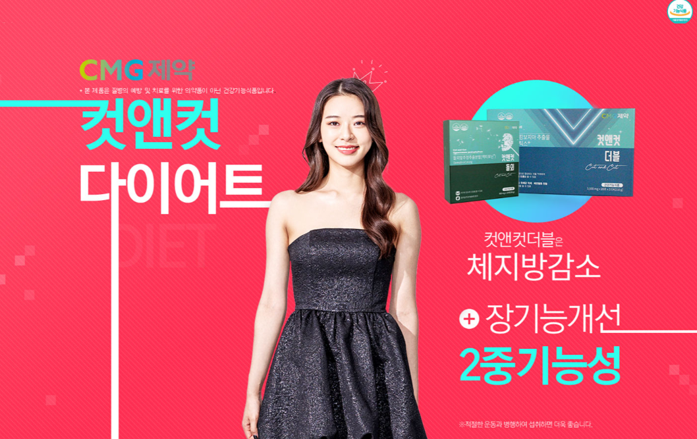
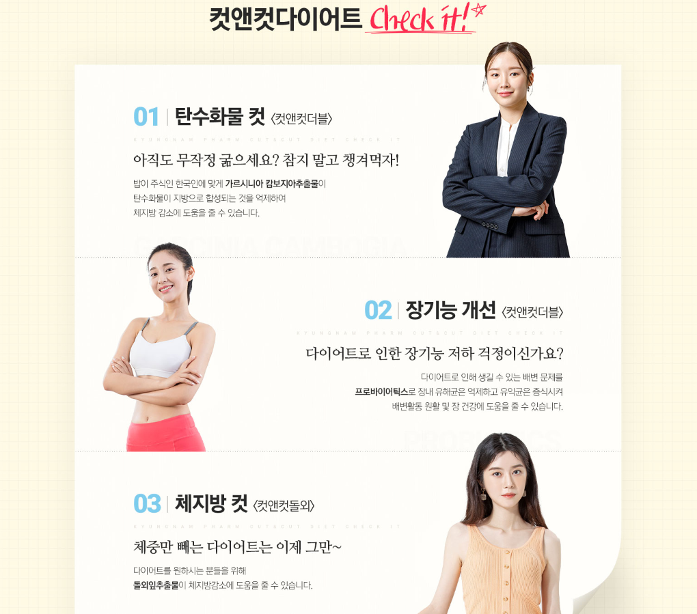
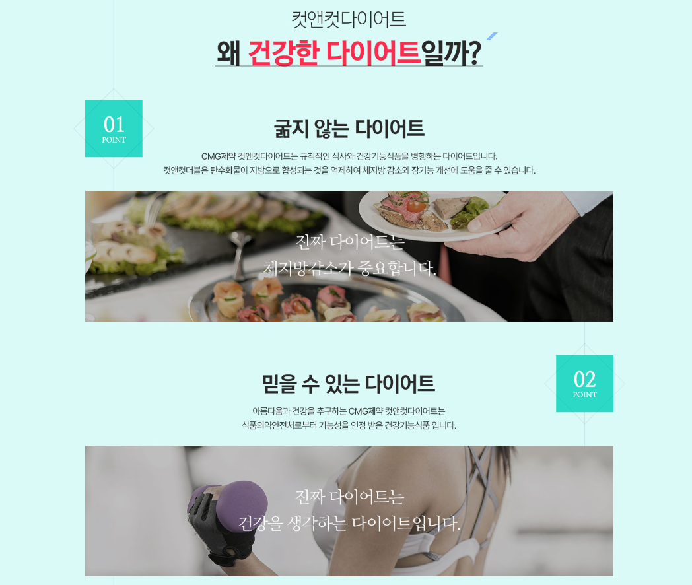
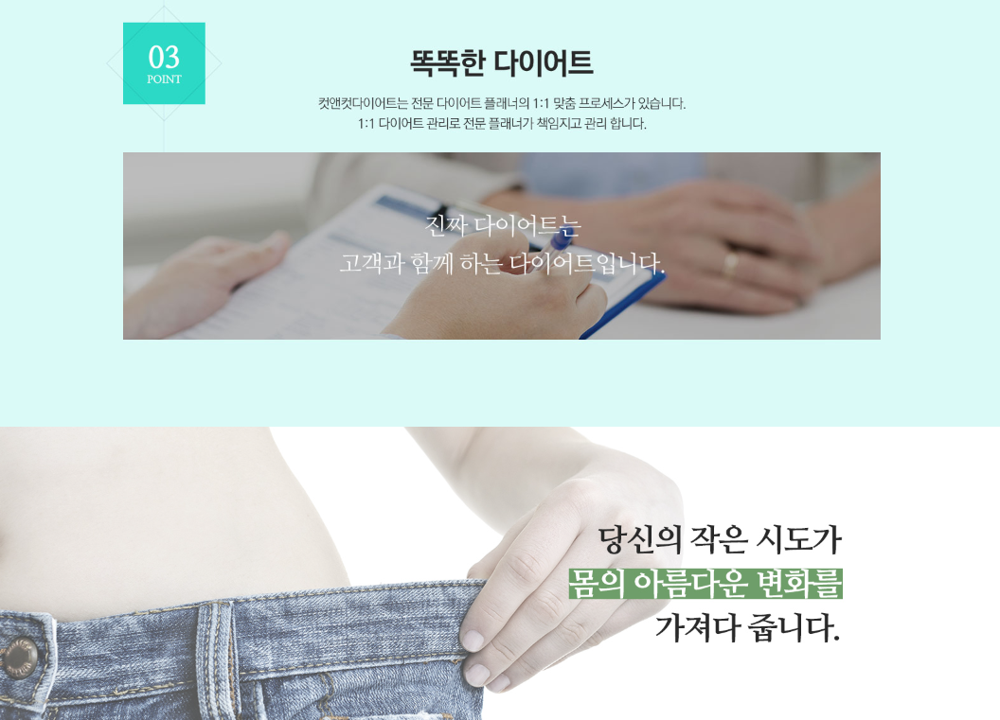

컷앤컷 다이어트 정보를 찾을 때 전후 사례나 빠른 변화가 강조된 콘텐츠를 접할 수 있습니다. 하지만 개인 사례와 실제 프로그램 구성은 별개의 정보입니다. 상담에서는 자신에게 제공되는 계획이 무엇인지, 얼마 동안 어떤 관리를 해야 하는지, 추가 비용은 없는지를 구체적으로 확인하는 것이 좋습니다.
전후 사례는 참고만 하고 프로그램 내용을 따로 적으세요
사례 사진이나 후기는 개인의 출발점과 생활환경이 반영되어 있어 같은 결과를 예상하기 어렵습니다. 사례를 본 뒤에는 “나는 실제로 어떤 식사와 활동을 해야 하는가”라는 질문으로 다시 돌아오는 것이 좋습니다.
프로그램에 포함된 서비스나 제품이 있다면 이름과 수량을 별도로 기록하세요.

초기 상담에서는 기간과 진행 방식을 구체적으로 물어보세요
상담 횟수, 진행 기간, 점검 주기, 온라인 또는 오프라인 여부를 확인하세요. 중간에 계획을 조정할 수 있는지도 실제 이용에서 중요한 부분입니다.
목표 체중보다 현재 생활에서 바꿀 수 있는 행동을 어떻게 정하는지 확인하면 프로그램 성격을 이해하기 쉽습니다.

표시사항
제품에 직접 표시된 객관적인 정보를 우선 확인하세요.
현재 구성
판매 시점의 실제 구성과 수량을 확인하세요.
이용 기준
제품 또는 프로그램에 안내된 이용 기준을 확인하세요.
거래 조건
가격·배송·반품 조건을 별도로 확인하세요.
표시 가격 외에 추가되는 비용이 있는지 확인하세요
기본 프로그램 외에 제품, 검사, 추가 상담, 배송 등의 비용이 별도인지 확인하세요. 할인가가 특정 기간이나 결제 방식에만 적용되는지도 함께 봐야 합니다.
결제 금액은 월 환산보다 전체 계약 기간 동안 실제 내는 총액을 기준으로 비교하세요.

치료 중이거나 약을 복용하고 있거나, 임신·수유 등 별도 확인이 필요한 상황이라면 제품 또는 프로그램을 시작하기 전에 의료진이나 관련 전문가에게 문의하는 것이 좋습니다.
식사와 활동 변화가 너무 급격하지 않은지 살펴보세요
평소 식사량과 활동 수준에서 갑자기 큰 변화를 요구하는 계획은 유지하기 어렵고 건강에 부담이 될 수 있습니다. 일상에서 단계적으로 적용할 수 있는 방식인지 확인하세요.
수면, 스트레스, 업무 일정처럼 체중 관리에 영향을 주는 생활요인을 함께 고려하는지도 체크해보세요.

건강 상태에 따라 계획을 조정해야 할 수 있습니다
질환이 있거나 약을 복용하는 경우, 임신·수유 중인 경우, 섭식 문제의 경험이 있는 경우에는 다이어트 프로그램을 시작하기 전에 의료진과 상의하는 것이 좋습니다.
어지럼증이나 심한 피로 등 이상 증상이 나타나면 무리해서 계획을 지속하지 말고 적절한 전문 상담을 받으세요.